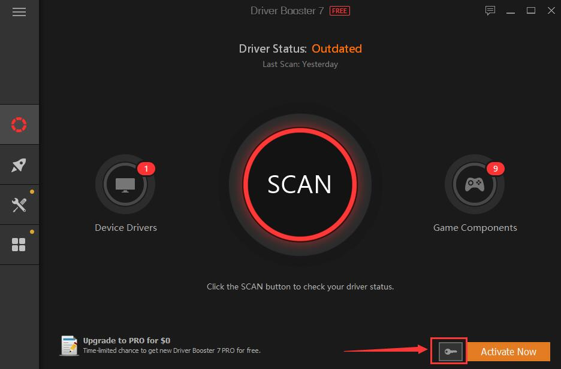

¿Qué hacer después formatear e instalar Windows 8 y 10 en pleno 2020?
Aunque no creas hay que estar atento y estar 100% seguro de lo que esta haciendo cuando termines de formatear e instalar tu sistema operativo por que si haces todo mal o de una manera que pueda ralentizar la PC tendrás que volver a instalar el sistema operativo y para esto esta tecno expand para ayudarte y orientarte cada vez que vayas a instalar un sistema operativo por que hay persona que los deja pasar por alto y no solo hablo de los drivers si no también otras cuestiones.
¿Qué es lo que debo de tener en cuenta para que todo salga bien y sin ningún error?
Tecno expand se dedica a esto ayudarte, orientarte y si es posible solucionar tus problemas compu, ahora lo primero que debes de saber que los problemas más amenudo que se puede presentar en una computadora son las (ACTUALIZACIONES DE WINDOWS DE CUALQUIER Versión) no es todas las computadoras sucede eso pero hay que ser precavido lo que enseñamos a nuestro cliente si quieres saber más de esto puedes comunicarte con nosotros es una buena técnica para todo aquel apasionado de la electrónica relacionado las computadoras.

Y los segundo que debes de tener claro son por obligación tienes que instalar tus drivers hasta la última versión con esto podemos evitar problemas futuro como el pantallazo azul o errores como estos, tecno expand recomienda este programa llamado Driver booter un programa fácil rápido y muy eficaz lo hemos recomendado a nuestro cliente por vía online y quedan satisfecho por los resultados.
Procedimiento para desactivar las actualización en cualquier sistema operativo
Puedes actualizar solo las importante pero no todas por que puede ocasionar problemas a futuro, y esto no solo lo decimos nosotros si no casi la gran mayoría que usa Windows ha tenido este problema más que todo en Windows 10. Ahora vamos con el procedimiento:
1-Pulsa la tecla de Windows + R, escribe services.msc en la barra de ejecución y pulsa la tecla Enter.
2-En la lista de procesos localiza el de Windows Update y ábrelo clicando en él.
3-Para desactivarlo, en la pestaña General, busca el campo "Tipo de incio" y cámbialo a "Deshabilitado".
4-Reinicia el PC y las actualizaciones automáticas habrán pasado a la historia.
Si en algún momento quieres volver a activarlas basta con volver a seguir estos pasos y cambiar el tipo de inicio a "Automático".
Eso no es todo par estar 100% seguro que tu PC correrá sin errores, te recomendamos obviamente un antivirus el tecno expand te recomienda se llama 360 segurity es gratuito y no tienes que crakear nada para poder usarlo.
Si quieres que te orientemos puedes comunicarte con nosotros donde te podemos ayudar y orientarse en tu problema de computadora o laptops somos una pequeña compañía que nos dedicamos a estos si quiere saber más te dejamos nuestra página de Facebook y Instragram
Quizas te puede interesar Este video